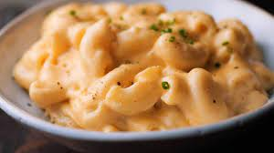

CREAMY CHEESE PASTA

creamy white pasta recipe
An easy and popular cheesy pasta recipe made with creamy white sauce with soft and tasty penne pasta. the recipe is very much inspired from the italian white-coloured pasta but tweaked and adjusted to the indian taste buds. it can be either served for lunch or dinner or as a
perfect lunch box recipes for kids and adults.
Ingredients
- 6 cup water
- 2 cup pasta, elicoidali or penne
- 2 tbsp oil
- 3 clove garlic, finely chopped
- 2 tbsp butter
- 2 cup milk
Steps
- firstly, in a large kadai boil 6 cup water and 1 tsp salt.
- once the water comes to a boil, add 2 cup pasta. i have used elicoidali pasta, you can alternatively use penne pasta.
- boil for 7 minutes, or until the pasta is cooked al dente.
- in a frying pan, heat 2 tbsp oil and saute 3 clove garlic.
- saute until the maida turns aromatic yet do not change its colour.
- finally, just before serving white sauce pasta, garnish with grated cheese.